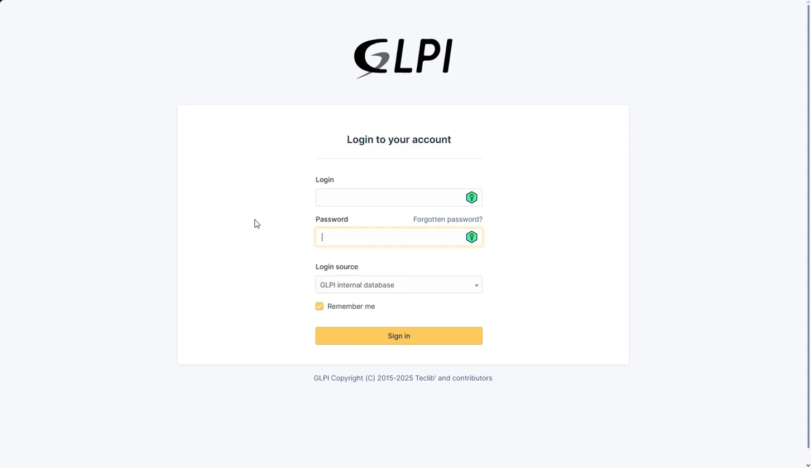
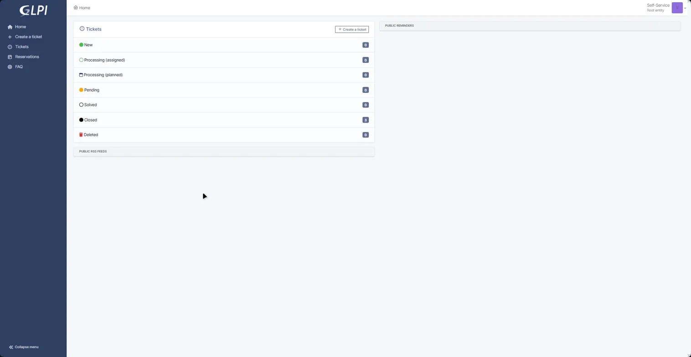
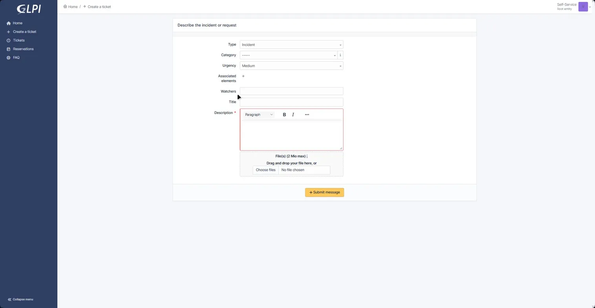

Open your web browser and go to the GLPI helpdesk portal. Ask IT for the URL if you don't have it saved.

Enter your login and password, leave the Login source as GLPI internal database, then click Sign in.
After logging in you'll see your ticket dashboard. All your tickets are listed here with their current status:

| Status | What it means |
|---|---|
| ● New | Ticket received, not yet picked up by IT |
| ○ Processing (assigned) | An IT team member has been assigned to it |
| ▣ Processing (planned) | Work is scheduled for a specific time |
| ● Pending | Waiting for more information from you |
| ○ Solved | IT has resolved the issue |
| ● Closed | Ticket is complete and closed |
| ● Deleted | Ticket has been removed |
Click the + Create a ticket button at the top of your dashboard, or use the link in the left-hand menu.
This opens the new ticket form.
Complete the form as described below. Fields marked * are required.

Choose Incident if something is broken or not working. Choose Request if you need something new — software, access, or equipment.
Pick the category that best matches your issue (e.g. Hardware, Software, Network, Account). If unsure, leave it blank — IT will set the right one.
Default is Medium. Only raise this if your work is completely blocked. Marking everything urgent slows response times for everyone.
If the issue relates to a specific device registered in GLPI, link it here using the + button. Optional.
Add a colleague or manager here if they should receive updates on this ticket. Optional.
Write a short, clear summary of the problem in one line.
Explain the issue in detail — what you were doing when it happened, any error messages, and what you've already tried.
Drag and drop a screenshot of any error message onto the upload box, or click Choose files. Maximum file size: 2 MB. This helps IT diagnose the issue faster.
Once all required fields are filled, click the + Submit message button at the bottom of the form.
You'll be taken to your new ticket's page showing its ID number and current status. You'll also receive a confirmation email.